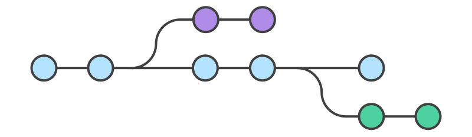

Git 分支管理
Git 分支管理是 Git 强大功能之一，能够让多个开发人员并行工作，开发新功能、修复 bug 或进行实验，而不会影响主代码库。
几乎每一种版本控制系统都以某种形式支持分支，一个分支代表一条独立的开发线。
使用分支意味着你可以从开发主线上分离开来，然后在不影响主线的同时继续工作。

Git 分支实际上是指向更改快照的指针。
有人把 Git 的分支模型称为必杀技特性，而正是因为它，将Git从版本控制系统家族里区分出来。
创建分支
创建新分支并切换到该分支：
git checkout -b <branchname>
例如：
git checkout -b feature-xyz
切换分支命令:
git checkout (branchname)
例如：
git checkout main
当你切换分支的时候，Git 会用该分支的最后提交的快照替换你的工作目录的内容， 所以多个分支不需要多个目录。
查看分支
查看所有分支：
git branch
查看远程分支：
git branch -r
查看所有本地和远程分支：
git branch -a
合并分支
将其他分支合并到当前分支：
git merge <branchname>
例如，切换到 main 分支并合并 feature-xyz 分支：
git checkout main git merge feature-xyz
解决合并冲突
当合并过程中出现冲突时，Git 会标记冲突文件，你需要手动解决冲突。
打开冲突文件，按照标记解决冲突。
标记冲突解决完成：
git add <conflict-file>
提交合并结果：
git commit
删除分支
删除本地分支：
git branch -d <branchname>
强制删除未合并的分支：
git branch -D <branchname>
删除远程分支：
git push origin --delete <branchname>
实例
开始前我们先创建一个测试目录：
$ mkdir gitdemo $ cd gitdemo/ $ git init Initialized empty Git repository... $ touch README $ git add README $ git commit -m '第一次版本提交' [master (root-commit) 3b58100] 第一次版本提交 1 file changed, 0 insertions(+), 0 deletions(-) create mode 100644 README
Git 分支管理
列出分支
列出分支基本命令：
git branch
没有参数时，git branch会列出你在本地的分支。
$ git branch * master
此例的意思就是，我们有一个叫做master的分支，并且该分支是当前分支。
当你执行git init的时候，默认情况下 Git 就会为你创建master分支。
如果我们要手动创建一个分支。执行git branch (branchname)即可。
$ git branch testing $ git branch * master testing
现在我们可以看到，有了一个新分支testing。
当你以此方式在上次提交更新之后创建了新分支，如果后来又有更新提交， 然后又切换到了testing分支，Git 将还原你的工作目录到你创建分支时候的样子。
接下来我们将演示如何切换分支，我们用 git checkout (branch) 切换到我们要修改的分支。
$ ls README $ echo 'runoob.com' > test.txt $ git add . $ git commit -m 'add test.txt' [master 3e92c19] add test.txt 1 file changed, 1 insertion(+) create mode 100644 test.txt $ ls README test.txt $ git checkout testing Switched to branch 'testing' $ ls README
当我们切换到testing分支的时候，我们添加的新文件 test.txt 被移除了。切换回master分支的时候，它们又重新出现了。
$ git checkout master Switched to branch 'master' $ ls README test.txt
我们也可以使用 git checkout -b (branchname) 命令来创建新分支并立即切换到该分支下，从而在该分支中操作。
$ git checkout -b newtest Switched to a new branch 'newtest' $ git rm test.txt rm 'test.txt' $ ls README $ touch runoob.php $ git add . $ git commit -am 'removed test.txt、add runoob.php' [newtest c1501a2] removed test.txt、add runoob.php 2 files changed, 1 deletion(-) create mode 100644 runoob.php delete mode 100644 test.txt $ ls README runoob.php $ git checkout master Switched to branch 'master' $ ls README test.txt
如你所见，我们创建了一个分支，在该分支上移除了一些文件 test.txt，并添加了 runoob.php 文件，然后切换回我们的主分支，删除的 test.txt 文件又回来了，且新增加的 runoob.php 不存在主分支中。
使用分支将工作切分开来，从而让我们能够在不同开发环境中做事，并来回切换。
删除分支
删除分支命令：
git branch -d (branchname)
例如我们要删除 testing 分支：
$ git branch * master testing $ git branch -d testing Deleted branch testing (was 85fc7e7). $ git branch * master
分支合并
一旦某分支有了独立内容，你终究会希望将它合并回到你的主分支。 你可以使用以下命令将任何分支合并到当前分支中去：
git merge
$ git branch * master newtest $ ls README test.txt $ git merge newtest Updating 3e92c19..c1501a2 Fast-forward runoob.php | 0 test.txt | 1 - 2 files changed, 1 deletion(-) create mode 100644 runoob.php delete mode 100644 test.txt $ ls README runoob.php
以上实例中我们将 newtest 分支合并到主分支去，test.txt 文件被删除。
合并完后就可以删除分支:
$ git branch -d newtest Deleted branch newtest (was c1501a2).
删除后， 就只剩下 master 分支了：
$ git branch * master
合并冲突
合并并不仅仅是简单的文件添加、移除的操作，Git 也会合并修改。
$ git branch * master $ cat runoob.php
注意：如果没有 runoob.php，需要先创建这个文件，命令可以是touch runoob.php。
首先，我们创建一个叫做 change_site 的分支，切换过去，我们将 runoob.php 内容改为:
<?php echo 'runoob'; ?>
创建 change_site 分支：
$ git checkout -b change_site Switched to a new branch 'change_site' $ vim runoob.php $ head -3 runoob.php <?php echo 'runoob'; ?> $ git commit -am 'changed the runoob.php' [change_site 7774248] changed the runoob.php 1 file changed, 3 insertions(+)
vim 命令操作可以参阅：Linux vi/vim。
将修改的内容提交到 change_site 分支中。 现在，假如切换回 master 分支我们可以看内容恢复到我们修改前的(空文件，没有代码)，我们再次修改 runoob.php 文件。
$ git checkout master Switched to branch 'master' $ cat runoob.php $ vim runoob.php # 修改内容如下 $ cat runoob.php <?php echo 1; ?> $ git diff diff --git a/runoob.php b/runoob.php index e69de29..ac60739 100644 --- a/runoob.php +++ b/runoob.php @@ -0,0 +1,3 @@ +<?php +echo 1; +?> $ git commit -am '修改代码' [master c68142b] 修改代码 1 file changed, 3 insertions(+)
现在这些改变已经记录到我的 "master" 分支了。接下来我们将 "change_site" 分支合并过来。
$ git merge change_site Auto-merging runoob.php CONFLICT (content): Merge conflict in runoob.php Automatic merge failed; fix conflicts and then commit the result. $ cat runoob.php # 打开文件，看到冲突内容 <?php <<<<<<< HEAD echo 1; ======= echo 'runoob'; >>>>>>> change_site ?>
我们将前一个分支合并到 master 分支，一个合并冲突就出现了，接下来我们需要手动去修改它。
$ vim runoob.php $ cat runoob.php <?php echo 1; echo 'runoob'; ?> $ git diff diff --cc runoob.php index ac60739,b63d7d7..0000000 --- a/runoob.php +++ b/runoob.php @@@ -1,3 -1,3 +1,4 @@@ <?php +echo 1; + echo 'runoob'; ?>
在 Git 中，我们可以用 git add 要告诉 Git 文件冲突已经解决
$ git status -s UU runoob.php $ git add runoob.php $ git status -s M runoob.php $ git commit [master 88afe0e] Merge branch 'change_site'
现在我们成功解决了合并中的冲突，并提交了结果。
命令手册
| 命令 | 说明 | 用法示例 |
|---|---|---|
git branch |
列出、创建或删除分支。它不切换分支，只是用于管理分支的存在。 | git branch：列出所有分支git branch new-branch：创建新分支git branch -d old-branch：删除分支 |
git checkout |
切换到指定的分支或恢复工作目录中的文件。也可以用来检出特定的提交。 | git checkout branch-name：切换分支git checkout file.txt：恢复文件到工作区git checkout <commit-hash>：检出特定提交 |
git switch |
专门用于切换分支，相比git checkout更加简洁和直观，主要用于分支操作。 |
git switch branch-name：切换到指定分支git switch -c new-branch：创建并切换到新分支 |
git merge |
合并指定分支的更改到当前分支。 | git merge branch-name：将指定分支的更改合并到当前分支 |
git mergetool |
启动合并工具，以解决合并冲突。 | git mergetool：使用默认合并工具解决冲突git mergetool --tool=<tool-name>：指定合并工具 |
git log |
显示提交历史记录。 | git log：显示提交历史git log --oneline：以简洁模式显示提交历史 |
git stash |
保存当前工作目录中的未提交更改，并将其恢复到干净的工作区。 | git stash：保存当前更改git stash pop：恢复最近保存的更改git stash list：列出所有保存的更改 |
git tag |
创建、列出或删除标签。标签用于标记特定的提交。 | git tag：列出所有标签git tag v1.0：创建一个新标签git tag -d v1.0：删除标签 |
git worktree |
允许在一个仓库中检查多个工作区，适用于同时处理多个分支。 | git worktree add <path> branch-name：在指定路径添加新的工作区并切换到指定分支git worktree remove <path>：删除工作区 |
孙先生
108***6366@qq.com
大家可以看看、了解一下：
孙先生
108***6366@qq.com
RUNOOB
429***967@qq.com
分支工作流
Git Flow 是一种常用的分支工作流，分为以下几种分支类型：
develop分支创建，用于开发新功能。develop分支创建，用于准备发布。main分支创建，用于紧急修复生产问题。创建功能分支：
完成功能开发并合并：
创建发布分支：
发布并合并到主分支和开发分支：
创建热修复分支：
完成修复并合并：
实例
以下是一个综合示例，演示分支创建、切换、合并和删除。
创建和切换分支：
开发并提交更改：
合并到主分支：
删除本地分支：
RUNOOB
429***967@qq.com